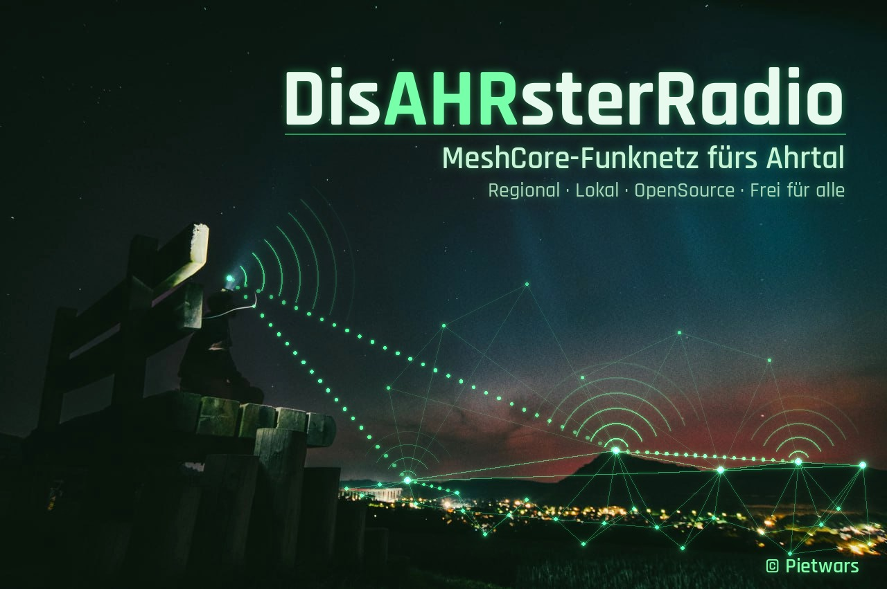

0.9.1 · MeshCore 1.18 · Web-Portal MeshAhrtal
Funkkontakt, wenn Internet und Mobilfunk ausfallen. DisasterMesh ist eine Firmware auf Basis von MeshCore 1.18 für günstige LoRa-Boards (868 MHz). Nachrichten springen von Knoten zu Knoten durchs Tal. Das Handy verbindet sich per WLAN mit dem Board und nutzt das Web-Portal MeshAhrtal – ganz ohne App.
Firmware aus dem Release auf das Board flashen, Antenne dran, Strom an.
Handy mit dem WLAN DisAHRsterRadio-XXXXXX verbinden (offenes WLAN).
Im Browser 192.168.4.1 öffnen – Web-Oberfläche MeshAhrtal.
Code, Anleitung, Fehler melden und mitmachen: